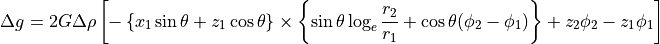
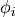
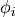
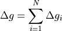
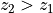
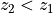
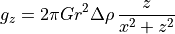

A1 Potential field algorithms¶
Two-dimensional gravity anomalies: Bott (1965) algorithm¶
Two dimensional gravity anomalies are calculated using a python implementation of Bott’s (1969) [1] algorithm. This is similar to that derived by Talwani et al., (1959) [5] and operates by setting the observation point as the origin of a Cartesian coordinate system and treating the periphery of a given body as an n-sided polygon, defined by of discrete set of nodal points. The total gravity anomaly is then calculated by evaluating the solution for a semi-infinite horizontal slab with one sloping interface for each set of nodal pairs and then summing the results. The analytic solution for this is given by Heiland (1940) [3] page. 153 as:
(1)¶
Where G is the Universal Gravitational Constant; Deltarho is the density contrast between the polygon and the
surrounding material;  ,
,  and
and  are the horizontal, vertical and absolute distance
between each node and the observation point,
are the horizontal, vertical and absolute distance
between each node and the observation point,  , respectively; theta is the angle between the sloping edge and the
horizontal; and  is the angle between the x-axis and respectively. The geometry of this
parametrisation is shown in Figure :num:`bott_method` a.
, respectively; theta is the angle between the sloping edge and the
horizontal; and  is the angle between the x-axis and respectively. The geometry of this
parametrisation is shown in Figure :num:`bott_method` a.
The total gravity anomaly produced by a given polygon is then determined by moving progressively counter-clockwise around the polygon and summing the contribution of each side (Equation (2)).
(2)¶
When  the contribution is positive and when  the contribution is
negative, such that, in the summation, the contributions outside of the polygon cancel, leaving only the gravity
anomaly produced by the polygon itself (Fig. bott_method b).
The Bott (1969) [1] algorithm is preferred to the Talwani et al., (1959) [5] because a) it runs slightly faster and b) it does not explicitly require closed polygons.

a) An example of a infinite slab with one sloping horizontal side, showing the geometric values relative to the observation point (0,0) using in solving Equation (2). b) Example of calculating the gravity anomaly due to a two dimensional body (red dashed line) estimated using five nodes (A-E) by summing the effects of the five infinite slabs with sloping sides (modified after, Kearey et al., (2013) [4]). :label: eq:bott_method
Bott (1965) algorithm testing¶
To assess the accuracy of the Bott (1969) [1] method, the gravity anomaly determined using the algorithm is compared to that of an exact analytic solution for a simple body. In this case, the solution for a buried horizontal cylinder of constant density contrast, that extends infinitely into and out of the model plane is used. The solution for this case is given by, for example, Garland (1965) [2] Pg. 70 as:
(3)¶